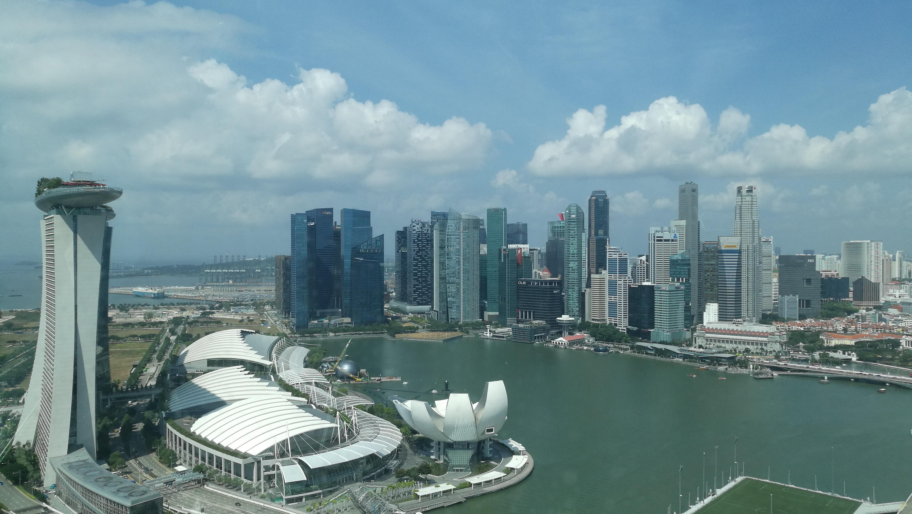
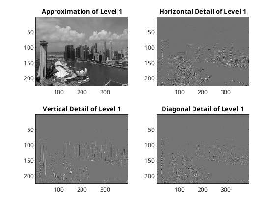
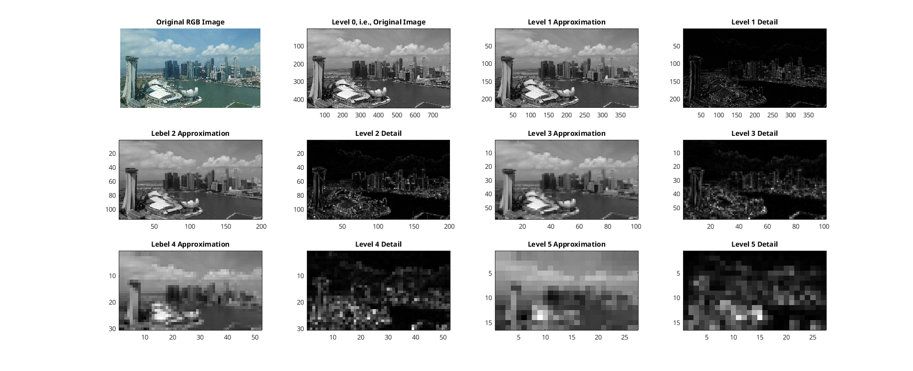

Multiresolution Decomposition
Marina Bay Area, Singapore
We approximate an image by using the multiresolution decomposition based on the Daubechies 2 wavelet. See
wavelet_marina_bay.m
,
wavelet_marina_bay_a.m
,
wavelet_marina_bay_b.m
,
wavelet_marina_bay_c.m
and
wavelet_marina_bay_d.m
for the detail.
Original RGB Image

Level 1

Multiresolution Analysis
